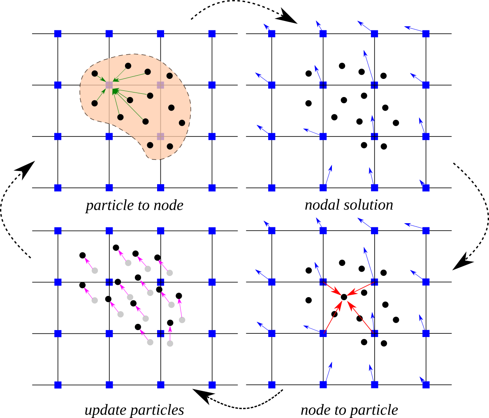
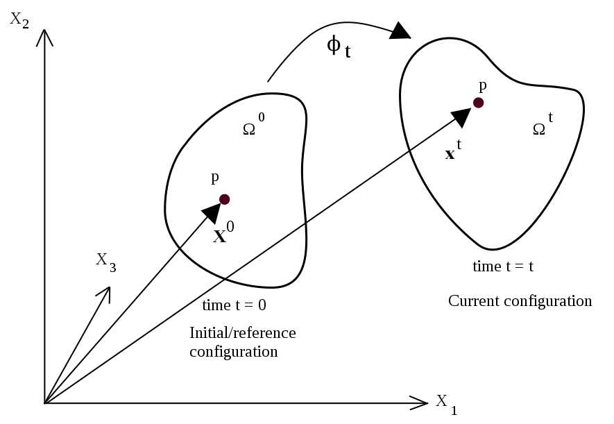
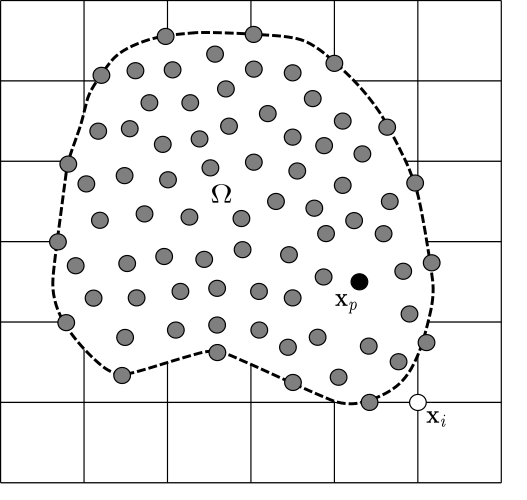

An introduction to the Material Point Method#
In continuum mechanics, there are two main descriptions of material motion: Lagrangian and Eulerian. The Lagrangian (material) description uses the initial configuration (i.e. at time, \(t = 0\)) to describe the physical quantities and the deformation state of a continuum body. So, the emphasis is given to individual particles in Lagrangian kinematic description. On the other hand, the Eulerian (or spatial) approach describes the motion of a continuum body with respect to the current coordinates and time. The spatial description therefore focuses on a specific position in space at current time.
The Material Point Method (MPM) is a hybrid Eulerian-Lagrangian approach, which uses moving material points on a fixed computational background grid. The MPM is a particle based method that represents the material as a collection of material points, and their deformations are determined by Newton’s laws of motion. This approach is very effective particularly in the context of large deformations.

Illustration of the MPM algorithm: (1) A representation of material points overlaid on a computational grid. Arrows represent material point state vectors (mass, volume, velocity, etc.) being projected to the nodes of the computational grid. (2) The equations of motion are solved onto the nodes, resulting in updated nodal velocities and positions. (3) The updated nodal kinematics are interpolated back to the material points. (4) The state of the material points is updated, and the computational grid is reset
Motion of deformable body#
It is essential to consider a proper description of motion in finite deformation analysis. In fact, material point method describes the behaviour of a deformable body in an updated Lagrangian frame.

Motion of a deformable body in continuum mechanics
The figure shows the general motion of a continuum body. The material particles are labelled with the position \(\mathbf{X}\) at their initial configuration (time \(t = 0\)). At current configuration at time \(t = t\), these particles are located at positions \(\mathbf{x}\). Motion between the initial and the current positions is mathematically described by a mapping function, \(\phi\) as
and
Despite the fact that the equations are solved in a Lagrangian framework, the spatial quantities in MPM are expressed in terms of the spatial position, \(\mathbf{x}\). Hence, the displacement, \(\mathbf{u}(\mathbf{x},t)\), velocity, \(\mathbf{v}(\mathbf{x},t)\) and the acceleration, \(\mathbf{a}(\mathbf{x},t)\) can be defined as
where \(\dfrac{d}{dt} = \dfrac{\partial}{\partial t} + \mathbf{v} \cdot \nabla\) is the material time derivative.
What is the material time derivative?
The material time derivative answers the question: how fast does a quantity change for a particular material particle while that particle moves through space?
Suppose \(f(\mathbf{x},t)\) is any field — for example temperature, density, displacement, or velocity. A material particle follows a trajectory \(\mathbf{x}_p(t)\), moving with the local velocity of the material:
The value of the field observed by that particle is
Applying the chain rule gives
Since \(d \mathbf{x}_p/dt = \mathbf{v}\),
The first term, \(\partial f/\partial t\), is the local rate of change seen at a fixed point in space; the second term, \(\mathbf{v} \cdot \nabla f\), is the convective rate of change the particle experiences because the flow carries it into regions where \(f\) is different. For example, applying the material time derivative to the velocity field gives the acceleration defined above:
Many texts denote the material time derivative by \(D/Dt\) to distinguish it from an ordinary time derivative.
In large deformation analysis with inelastic material behaviour, it is usually difficult to follow the deformation history. Hence, the material motion is usually described in terms of small increments of the deformation and the stress-strain relationships are defined in incremental form. The symmetric small strain tensor, \(\pmb{\epsilon}\) is given by
with its rectangular Cartesian components
Why is strain defined this way?
Strain must measure shape change only — rigid motions deform nothing and must produce no stress. All local relative motion is contained in the displacement gradient \(\nabla \mathbf{u}\), and its symmetric and antisymmetric parts separate the two effects:
Quick check: a small rigid rotation by \(\theta\) displaces points by \(\mathbf{u} = (-\theta y, \, \theta x)\), so \(\nabla \mathbf{u} = \left[\begin{smallmatrix} 0 & -\theta \\ \theta & 0 \end{smallmatrix}\right]\) is purely antisymmetric and \(\pmb{\epsilon} = \mathbf{0}\) — no strain, hence no stress. Keeping only the symmetric part is what makes the stress–strain law immune to rigid rotations; the factor \(\frac{1}{2}\) is just the averaging of \(\nabla \mathbf{u}\) with its transpose.
What remains has a direct geometric meaning: diagonal terms of \(\pmb{\epsilon}\) are stretches per unit length (\(\epsilon_{xx} = \partial u_x/\partial x\); in 1D simply \(\epsilon = du/dx\)), and off-diagonal terms measure changes of angles (shear).
This small-strain form assumes \(|\nabla \mathbf{u}| \ll 1\). MPM handles large deformations by applying it incrementally: within one time step the added deformation is small, so the strain increment \(\Delta \pmb{\epsilon}\) stays valid even when the total deformation is large.
In the viscous behaviour of materials or in most plasticity theories, the equations are generally formulated in terms of the rate of deformation. The rate of deformation tensor is defined as
where \(L = \nabla \mathbf{v}\) is the velocity gradient.
The rectangular Cartesian components of the rate of deformation tensor are given by
Governing equations#
Material motion is mathematically represented by the conservation laws expressed in differential form. For the problems considered in this book, the governing equations include only the conservation of mass and momentum.
The conservation of mass, which is also referred to as the continuity equation, states that the mass of a closed system (i.e. a system that does not exchange matter with its surroundings) must remain constant.
The linear momentum balance equation is also called as the equation of motion and it is derived by applying the Newton’s second law to a continuum body.
where \(\rho(\mathbf{x},t)\) is the mass density, \(\pmb{\sigma}(\mathbf{x},t)\) is the symmetric Cauchy stress tensor and \(\mathbf{b}(\mathbf{x},t)\) is the external body force per unit mass.
Weak form and spatial discretisation#
MPM describes the whole material domain, \(\Omega\) with a set of Lagrangian material points that are tracked throughout the deformation process. An Eulerian grid is used to solve the equation of motion. In the figure below, the grey circles are the material points \(\mathbf{x}_{p}\), where p represents a material point, and the computational nodes are the points of intersection of the grid (denoted as \(\mathbf{x}_{i}\), where i represents a computational node). The MPM involves discretising the domain, \(\Omega\), with a set of material points. The material points are assigned an initial value of position, velocity, mass, volume, and stress, denoted as \(\mathbf{x}_{p}\), \(\mathbf{v}_{p}\), \(M_{p}\), \(V_{p}\), and \(\pmb{\sigma}_{p}\). Depending on the material being simulated, additional parameters, like pressure, temperature, pore-water pressure, etc., are specified at the material points. The material points are assumed to be within the computational grid which for ease of computation, is assumed to be a Cartesian lattice. At every time step \(\mathit{t}_{k}\), the MPM computation cycle involves projecting the data, such as mass and velocity (momentum), from the material points to the computational grid using the standard nodal basis functions, called the shape functions, derived from the position of the particle with respect to the grid. Gradient terms are calculated on the computational grid, and the governing equation, i.e. the equation of motion, is solved with the updated position and velocity values mapping back to the material points. The mesh is reinitialised to its original state and the computational cycle is repeated.
The material domain is discretized into \(n_p\) material points in its initial configuration, \(\Omega^0\), with positions \(\mathbf{x}_p^0\) at time \(t=0\) — these initial positions serve as the material coordinates of the points — and \(\mathbf{x}_p^t\) at time \(t\) \((p = 1, 2, ..., n_p)\). Each material point represents an infinitesimal mass element with a fixed mass \(M_p\) throughout the computation. Hence, mass density can be expressed as
where \(\delta\) is the Dirac delta function.
Why can the density be written this way?
Each material point represents a small piece of the body whose mass \(M_p\) is imagined to be concentrated entirely at the single moving location \(\mathbf{x}_p^t\). The density of such a point mass must be zero everywhere except at \(\mathbf{x}_p^t\), yet its integral over any region containing the point must return the full mass \(M_p\) — exactly the defining property of the scaled Dirac delta \(M_p \delta(\mathbf{x} - \mathbf{x}_p^t)\). Summing over all points gives the density of the whole discretized body.
This expression carries the correct mass everywhere: integrating it over any region \(V\) picks up exactly the masses of the points currently inside that region,
and mass conservation is automatic: each \(M_p\) is a constant, and the deltas simply travel with the points.
Strictly, \(\delta\) is not a function but a distribution — it only acquires meaning under an integral. That is exactly how it is used on this page: the weak form below consists of integrals, and this representation is what later collapses them into sums over the material points.

The background mesh consists of a total number of nodes, \(n_n\) that are located at \(\mathbf{x}_i\) with shape functions \(N_i(\mathbf{x})\) (\(i = 1,2,...,n_n\)). The position, displacement, velocity and acceleration at any point in the continuum body are approximated using the shape functions similar to the finite element method.
The coordinates of a point at any given time are approximated using the nodal basis functions as
Similarly, the displacement, velocity and acceleration fields of a point in the material domain at any given time \(t\) can be approximated by
The fixed mass, \(M_p\), of the material points implies that the equation of conservation of mass is automatically satisfied.
Following the finite element method, the weak form of the linear momentum balance equation is obtained by multiplying the momentum conservation equation by a test function, \(\mathbf{w}\), and integrating over the current configuration, \(\Omega\). At every instant \(t\), the velocity field is sought in the trial space \(\mathcal{V}\) and the test function is an arbitrary member of the test space \(\mathcal{V}_0\),
where \(H^1(\Omega)\) is the space of square-integrable functions on \(\Omega\) with square-integrable first derivatives, and \(\partial \Omega_u\) is the part of the boundary on which the motion is prescribed to be \(\bar{\mathbf{v}}\). The weak form reads
where \(d\Omega\) is the differential volume.
The test function, \(\mathbf{w}\), is also expressed using the nodal basis functions:
Applying integration by parts and the divergence theorem to the term involving the stress, the weak form equation can be rewritten as
where \(dS\) is the differential surface, \(\mathbf{t} = \pmb{\sigma} \cdot \mathbf{n}\) is the prescribed surface traction, \(\mathbf{n}\) is the unit normal vector to the boundary, and \(\partial \Omega_\Gamma = \partial \Omega \setminus \partial \Omega_u\) is the part of the boundary on which tractions are prescribed. The boundary integral appears only over \(\partial \Omega_\Gamma\) because the test function vanishes on \(\partial \Omega_u\).
Substituting the approximation of the acceleration field, \(\mathbf{a} = \sum_{j=1}^{n_n} N_j \mathbf{a}_j\), and of the test function, \(\mathbf{w} = \sum_{i=1}^{n_n} N_i \mathbf{w}_i\), into the weak form equation, moving all terms to one side, and collecting the terms that multiply each nodal value \(\mathbf{w}_i\) gives
The weak form must hold for every test function in \(\mathcal{V}_0\) — that is, for an arbitrary choice of the nodal values \(\mathbf{w}_i\). Choosing \(\mathbf{w}_i\) to be non-zero at a single node at a time forces each bracketed term to vanish individually. This is how the test function is eliminated: it leaves one equation for every node \(i\),
In contrast to the Gauss quadrature used in FEM, MPM uses the locations of the material points as the integration points. Recall that the mass density is represented by point masses, \(\rho(\mathbf{x},t) = \sum_{p=1}^{n_p} M_p \delta (\mathbf{x} - \mathbf{x}_p^t)\). Substituting this density into any density-weighted integral collapses it into a sum over the material points:
for an arbitrary field \(g(\mathbf{x})\). This takes care of the inertia and the body force terms, which both contain the density \(\rho\).
Why does the integral collapse to a sum?
The defining (sifting) property of the Dirac delta function is that integrating any function against it samples that function at the point where the delta is centred:
Substituting \(\rho(\mathbf{x},t) = \sum_{p=1}^{n_p} M_p \delta(\mathbf{x} - \mathbf{x}_p)\) into the density-weighted integral, then moving the sum and the constant masses \(M_p\) outside the integral and applying the sifting property to each term:
Physically: all the mass sits in point lumps \(M_p\), so integrating a field against the mass distribution simply samples the field at each particle position, weighted by that particle’s mass.
The internal force term, \(\int_{\Omega} \nabla N_i : \pmb{\sigma} \hspace{3pt} d\Omega\), contains no density, so the point-mass substitution cannot be applied to it. It is instead approximated in the same way as a Riemann sum: the body is divided into small pieces, each represented by one material point occupying a volume \(V_p\), and the integrand is sampled at the material point locations,
Unlike the point-mass substitution, this is an approximation; its accuracy improves with the number of material points per cell. Finally, the surface traction term needs neither rule — it is an integral over the boundary \(\partial \Omega_\Gamma\), not over the volume of the body, and is evaluated separately where tractions are prescribed.
Applying these rules to each term of the nodal momentum equation above turns it into the semi-discrete momentum equation — discrete in space but still continuous in time, with the nodal accelerations \(\mathbf{a}_j(t)\) as the unknowns:
where \(M_{ij}\) is the consistent mass matrix, \(\mathbf{F}_i^{int}\) is the internal force vector and \(\mathbf{F}_i^{ext}\) is the external force vector.
Applying the rules term by term
Take the nodal momentum equation and treat each of its four terms separately.
Inertia term — contains \(\rho\), so the point-mass rule applies with \(g = N_i N_j\):
so the left-hand side becomes \(\sum_{j} M_{ij} \mathbf{a}_j\).
Stress term — no density, so the volume rule applies with \(g = \nabla N_i : \pmb{\sigma}\):
Body force term — contains \(\rho\), so the point-mass rule applies with \(g = N_i \mathbf{b}\):
Traction term — a boundary integral, left as it is: \(\int_{\partial \Omega_\Gamma} N_i \mathbf{t} \hspace{3pt} dS\).
The last two terms together form the external force vector \(\mathbf{F}_i^{ext}\). Collecting the four results reproduces the semi-discrete momentum equation with exactly the \(M_{ij}\), \(\mathbf{F}_i^{int}\) and \(\mathbf{F}_i^{ext}\) defined below.
The consistent mass matrix is given by
The internal force vector computed at the grid nodes is written as
and the external force vector is
The mass matrix is called consistent because it is derived from the same shape functions used to discretise the weak form.
To advance the solution in time, the semi-discrete momentum equation must be solved for the nodal accelerations: at any given instant the state of the material points is known, so \(M_{ij}\), \(\mathbf{F}_i^{int}\) and \(\mathbf{F}_i^{ext}\) can all be computed — the accelerations \(\mathbf{a}_j\) are the only unknowns. Writing out the sum for a single node \(i\) makes the difficulty visible:
This one equation contains several unknowns at once: every \(\mathbf{a}_j\) whose coefficient \(M_{ij}\) is non-zero, which happens whenever nodes \(i\) and \(j\) share a cell containing a material point — only then are \(N_i\) and \(N_j\) both non-zero at the same position \(\mathbf{x}_p\), making \(M_{ij} = \sum_p N_i(\mathbf{x}_p) N_j(\mathbf{x}_p) M_p \neq 0\). The acceleration of node \(i\) therefore cannot be computed from its own equation alone: to isolate \(\mathbf{a}_i\), the accelerations of the neighbouring nodes would already have to be known — but they are unknowns themselves, determined by their own equations, which in turn involve their neighbours, and so on across the whole mesh. The equations of all \(n_n\) nodes must instead be solved simultaneously as a linear system
which would have to be assembled and solved anew at every time step, because \(M_{ij}\) depends on the material point positions, and these change as the material points move through the mesh.
In the standard MPM formulation this expense is avoided by a deliberate approximation called mass lumping. In the row of node \(i\), every unknown neighbouring acceleration \(\mathbf{a}_j\) is replaced by the acceleration \(\mathbf{a}_i\) of node \(i\) itself — a small error whenever the acceleration field varies smoothly from one node to the next. The coefficients \(M_{ij}\) then no longer multiply different unknowns; they factor out and add up to a single row sum:
The row sum \(m_i\) is called the lumped nodal mass: the whole mass of row \(i\) is collected — “lumped” — at the node itself, so no mass is lost. Applying the same approximation to every row of the linear system replaces the full mass matrix by a diagonal matrix holding the row sums \(m_i\), while the unknowns and the right-hand side stay exactly the same:
Compare the two systems: the off-diagonal coefficients that tied each equation to the neighbouring nodes are gone, so every row now contains a single unknown. The simultaneous solve is no longer needed — each nodal acceleration follows from its own row by a division:
Lumping approximates the inertia, but it conserves the total mass and is what makes the explicit MPM update inexpensive. It has a further practical advantage: the lumped mass never has to be assembled from \(M_{ij}\) at all. Substituting the definition \(M_{ij} = \sum_{p} N_i(\mathbf{x}_p) N_j(\mathbf{x}_p) M_p\) into the row sum and swapping the order of the two sums,
because the shape functions sum to one at any position (partition of unity). The result has a simple physical meaning: each material point hands its mass \(M_p\) to the nodes of the cell containing it, in proportion to the shape function values at its position. This is exactly how the algorithm in the next section begins every time step — the particle mass is mapped directly to the nodes, and the matrix \(M_{ij}\) is never formed.
Time integration and numerical implementation#
In order to obtain the fully discrete form of the governing equations, semi-discrete equation must be discretized in time. MPM is well known for its explicit dynamic formulation: the nodal velocities are advanced with a forward Euler step, and the material point positions are then updated using the newly computed velocities. It follows that the nodal acceleration in the semi-discrete equation is solved explicitly using the known internal and external forces at the current configuration at time \(t\) as
where \(m_i^t\) is the lumped mass at the nodes.
The nodal velocity at the next time step, \(\mathbf{v}_i^{t+\Delta t}\), is computed as
where \(\Delta t\) is the time increment.
The explicit time integration is computationally convenient. However, it is a conditionally stable scheme which restricts the time step size to ensure numerical stability. Consequently, the time step must satisfy the Courant–Friedrichs–Lewy (CFL) condition. This is a necessary condition for convergence in explicit time marching numerical methods.
For one dimensional case, the CFL condition has the following form,
where \(c\) is the characteristic wave speed, \(\Delta x\) is the spacing of the grid, \(\Delta t\) is the time step size and \(C_{max}\) is the maximum Courant number which is unity for most explicit methods.
In order to solve the fully discrete form and velocity update equation at the grid nodes, mass and velocity carried by the material points must be transferred to the background grid. At the beginning of each Lagrangian time step, particle mass is mapped to the nodes using
Nodal velocity at each time step is computed by mapping particle momentum as
With acceleration, \(\mathbf{a}_i^t\) solved at the nodes using fully discrete form equation, the material points are updated while the grid is assumed to move with the computed velocity field. Moving of material points through the grid completes the Lagrangian description used in the MPM formulation.
Finally, the velocity and the position of material points are updated by
It should be noted from the internal force equation that the stress is carried by the material points; the strain is stored there as well. This implies that the constitutive equations are applied at the material points. As a result, following the history of deformation is convenient in MPM. Similarly, the external body forces are also applied at the material points as in the external force equation.
Conservation properties#
MPM automatically satisfies the mass conservation by assigning a constant mass to each material point. The momentum balance is enforced in governing equations. However, Bardenhagen (2002) showed that the original MPM formulation does not satisfy the energy conservation explicitly. It was found that the energy conservation in MPM is strongly dependent on which of the two stress update algorithms — Update Stress First (USF) or Update Stress Last (USL), described in the following sections — is used at the material points.
[1] Bardenhagen, S. G. (2002). Energy conservation error in the material point method for solid mechanics. Journal of Computational Physics, 180(1), 383–403.